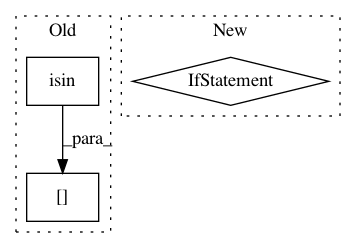

fd633602af08b199d87d222a8cfb85acea17b55a,optuna/visualization.py,,_get_intermediate_plot,#Any#,52
Before Change
return go.Figure(data=[], layout=layout)
target_state = [TrialState.PRUNED, TrialState.COMPLETE, TrialState.RUNNING]
dst_df = df[df["state"].isin(target_state)]
dst_df = dst_df[dst_df["intermediate_values"].isnull().all(axis=1) == False]
traces = []
for __, row in dst_df.iterrows():
trace = go.Scatter(
After Change
trials = study.trials
if len(trials) == 0:
logger.warning("Study instance does not contain trials.")
return go.Figure(data=[], layout=layout)
if hasattr(trials[0], "intermediate_values") is False:
logger.warning(
"You need to set up the pruning feature to utilize plot_intermediate_values()")
return go.Figure(data=[], layout=layout)
In pattern: SUPERPATTERN
Frequency: 3
Non-data size: 3
Instances
Project Name: pfnet/optuna
Commit Name: fd633602af08b199d87d222a8cfb85acea17b55a
Time: 2019-09-11
Author: suehiro619@gmail.com
File Name: optuna/visualization.py
Class Name:
Method Name: _get_intermediate_plot
Project Name: kwgoodman/numerox
Commit Name: 79c3d3004346ae19bb13332f84771a00a224e788
Time: 2017-10-24
Author: kwgoodman@gmail.com
File Name: numerox/util.py
Class Name:
Method Name: cv
Project Name: keras-team/keras-preprocessing
Commit Name: 6f679b06d10d39edcb066142eec9e3bcd6d9de4b
Time: 2019-02-25
Author: rragundez@users.noreply.github.com
File Name: keras_preprocessing/image/dataframe_iterator.py
Class Name: DataFrameIterator
Method Name: _filter_valid_filepaths